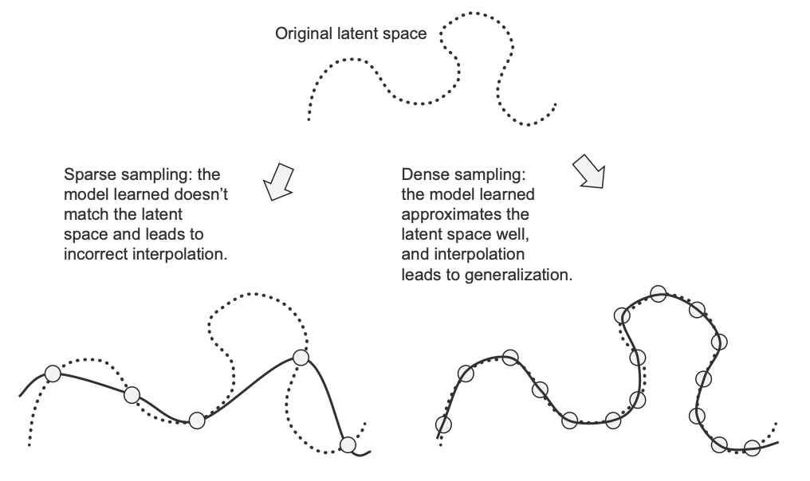
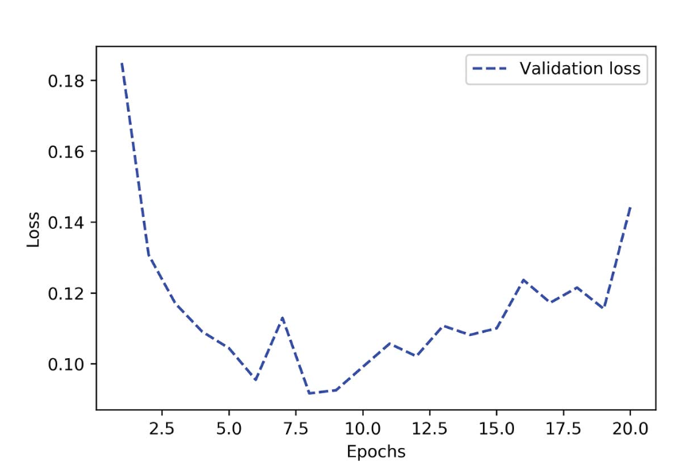

Deep Learning with Python - François Chollet
Table of Contents
ISBN: 9781617296864 Got to know about the book from this tweet.
books/Deep Learning with Python - François Chollet.pdf
The fundamental issue in machine learning is the tension between optimization and generalization.
1. The Manifold Hypothesis
The manifold hypothesis posits that natural/real-world high-dimensional data lies on a low-dimensional manifold embedded in the high dimension.
Take the example of MNIST dataset, the space of all inputs is 28x28 array of integers (i.e. 256784 ). However, very few of these inputs would look like the MNIST samples. And the subspace of valid samples isn't randomly sprinkled, but is rather highly structured and forms a Manifold. The input space is:
- Continuous: Take a sample, and modify it a little, it would still be valid.
- Connected by smooth path: Two samples can be smoothly morphed from one to other. This morphing is not done (say linearly) in the input space but in the latent manifold.
A Manifold is the low-dimensional subspace of the high-dimensional input space, where all the natural data lies. This gives two advantage to deep learning models:
- ML models need to only fit the simpler, low-dimensional, highly structured subspace
- Within the manifold, it is always possible to interpolate between two inputs. (i.e. morph one input to another along a continuous path). This is the key to generalization in deep learning.
In this sense, Deep Learning is nothing but curve fitting and thus for a model to perform well it needs to be trained on a dense sampling of its input space. Dense sampling lead to a learned model that approximates the latent space well and generalizes well on interpolation.

Figure 1: Dense Sampling Leads to Generalization
Humans are capable of extreme generalization, which is enabled by cognitive mechanisms other than interpolation:
- abstraction,
- symbolic models of the world,
- reasoning,
- logic,
- common sense,
- innate priors about the world—what we generally call reason,
as opposed to intuition and pattern recognition. The latter are largely interpolative in nature, but the former isn’t.
2. Workflow of Deep Learning
2.1. Beat a Baseline
In deep learning, you can't observe the manifold learning process because its happening in far higher dimension than our familiar 3 dimensions. The only feedback you have is your validation metrics.
So, first pick a trivial baseline that you'll try to beat. Once the validation metrics are going down and you seem to achieve some level of generalization, you are on the right path.
During this stage, there are three important things to focus on:
- Feature Engineering: Filter out uninformative features, and develop new features that are likely to be useful
- Architecture piors: Choose the right architecture for the problem: MLP, or Convnet or RNN or Transformer
- Training Configuration: Find the right Loss function, batch size and learning rate
So, the initial goal is to achieve statistical power: A small model that is capable of beating a baseline.
2.2. Try Overfitting
Once you have a model with statistical power, the question becomes, is your model sufficiently powerful? We don't want model that underfit or that is starved for memorization capacity. The model should have the capacity to overfit.
If the validation curve goes down and stays flat, it's likely a problem with the representational power of the model, and you need a bigger model. It should always be possible to overfit. The model should fit fast and start overfitting.
To find an overfitting model:
- Add layers
- Make the layers bigger
- Train for more epochs

Figure 2: Validation Loss for a Model of Appropriate Capacity
2.3. Improve Generalization
Once the model has shown to have some generalization and is able to overfit, it's time to focus on maximizing generalization.
2.3.1. Dataset quality
Dataset quality is very important:
- Make sure to have enough data
- Minimize labeling errors
- Clean you data (deal with missing values)
- Do feature selection (if there are many features)
- Feature engineering improves the generalization potential
2.3.2. Early Stopping
In deep learning, we always use models that are vastly overparameterized: they have way more degrees of freedom than the minimum necessary to fit to the latent manifold of the data. This overparameterization is not an issue, because you never fully fit a deep learning model. Such a fit wouldn’t generalize at all. You will always interrupt training long before you’ve reached the minimum possible training loss.
2.3.3. Regularizing your model
Regularization techniques are a set of best practices that actively impede the model’s ability to fit perfectly to the training data, with the goal of making the model perform better during validation. This is called “regularizing” the model, because it tends to make the model simpler, more “regular,” its curve smoother, more “generic”.
Some ways to regulaize model are:
- Reducing network's size
If the model has limited memorization resource, it won't be able to simply memorize its training data. But also, it should have enough parameters such that it doesn't underfit. So, use a big model but not too big.
The general workflow for finding an appropriate model size is to start with relatively few layers and parameters, and increase the size of the layers or add new layers until you see diminishing returns with regard to validation loss.
- Weight Regualization: L1 or L2 Regualization
Weight regularization is more typically used for smaller deep learning models. Large deep learning models tend to be so overparameterized that imposing constraints on weight values hasn’t much impact on model capacity and generalization. In that case dropout is preferred.
- Dropout
The core idea in Dropout (NN) is that introducing noise in the output values of a layer can break up happenstance patterns that aren’t significant (what Hinton refers to as conspiracies), which the model will start memorizing if no noise is present.
2.4. Tips
2.4.1. Value Normalization
In general, it isn’t safe to feed into a neural network data that takes relatively large values (for example, multi-digit integers, which are much larger than the initial values taken by the weights of a network) or data that is heterogeneous (for example, data where one feature is in the range 0–1 and another is in the range 100–200). Doing so can trigger large gradient updates that will prevent the network from converging.
2.4.2. Evaluation Metric
While setting up your validation procedure, be sure to:
- randomly shuffle (e.g. in classification problem the data might have been ordered by class)
- avoid temporal leak in time series data (training data should be older than validation data which should be again older than test data) because in some problem changing the arrow of time can make the problem trivial.
- avoid redundancy in training and validation data (i.e. they must be disjoint). E.g. Chest X-ray images from different angles of the same person should not be in both training and validation dataset.
Evaluation metric can be accuracy, area under reciever operating characteristic ROC AUC or some other custom metric. For class-imbalanced problems, you can use precision and recall, as well as weighted form of accuracy, ROC AUC.
Once you’ve developed a satisfactory model configuration, you can train your final production model on all the available data (training and validation) and evaluate it one last time on the test set. If it turns out that performance on the test set is significantly worse than the performance measured on the validation data, this may mean either that your validation procedure wasn’t reliable after all, or that you began overfitting to the validation data while tuning the parameters of the model. In this case, you may want to switch to a more reliable evaluation protocol (such as iterated K-fold validation).